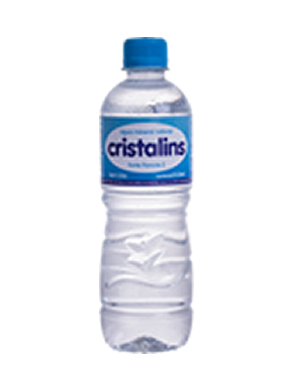

<!--
  Generated template for the LogadoPage page.

  See http://ionicframework.com/docs/components/#navigation for more info on
  Ionic pages and navigation.
-->

<ion-header>

  <ion-navbar color="primary">
  
  	

    <ion-title>Água</ion-title>

	    
    
  </ion-navbar>


</ion-header>


<ion-content padding>
<ion-row>
	<ion-col col-12>
		
	</ion-col>
</ion-row>

<!-- MONTE SEU LANCHE -->
<form [formGroup]="cadastro" (ngSubmit)="postDados()">
<ion-card>
  
  <ion-card-header>
    Escolha sua Água:
  </ion-card-header>
  
  <ion-card-content>

      <ion-list>
        <ion-item>
          <ion-label>Água</ion-label>
          
          <ion-select name="mt_sabor" formControlName="mt_sabor">
            <ion-option value="Com gás">Com gás</ion-option>
            <ion-option value="Sem gás">Sem gás</ion-option>
                  
          
          </ion-select>
       
        </ion-item>
      </ion-list>

  </ion-card-content>
</ion-card>

<ion-card>
  <ion-card-header>
    Escolha o Tamanho:
  </ion-card-header>
  <ion-card-content>

  '<ion-list>
      <ion-item>
        <ion-label>Tamanho</ion-label>
        <ion-select name="sabor_lanche" formControlName="sabor_lanche">
          
          <ion-option value="600ml">600ml</ion-option>
          <ion-option value="2lt">2Lt</ion-option>                
        </ion-select>
      </ion-item>
    </ion-list>'

  

  </ion-card-content>
</ion-card>

<!-- OBSERVAÇÕES -->

  <ion-card>

    <ion-card-header>
        Observações:
      </ion-card-header>

    <ion-card-content>
      <ion-textarea placeholder="Digite aqui..." name="observacoes" formControlName="observacoes"></ion-textarea>
      
    </ion-card-content>
  </ion-card>

  <br>

<button [disabled]="cadastro.invalid" ion-button full (click)="showAlert();" (click)="gotoLogado();">Adicionar ao carrinho</button>
</form> 

</ion-content>


